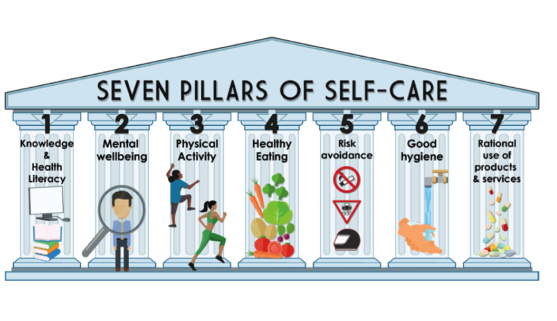

Positives to Self Care
September 24th, 2023 2:00pm CST
The ups and downs in working with people can have a huge impact on you. Practicing self-care can better equip you to deal with a crisis and the difficulty of aiding someone with a mental health or substance use challenge. Engaging in a self-care routine has been clinically proven to reduce or eliminate anxiety and depression, reduce stress, increase happiness, and more. It can help you adapt to changes, build strong relationships, and recover from setbacks.
"In a national survey, Americans cited benefits self-care as:enhanced self-confidence (64%), increased productivity (67%), happiness (71%). From a physical health perspective, self-care also reduces heart disease, stroke and cancer."
What Is Self Care?
The practice of taking action to perserve or improve one's own health and protecting one's own happiness and well being.
Get Active!! Move More
September 25th, 2023 9am CST
"Physical activity can help the brain cope better with stress, making it beneficial in the treatment of depression and anxiety symptoms. Regular physical activity has also been demonstrated to strengthen the immune system, which is especially important as we continue to fight COVID-19. You can also turn your exercise routine into way to spend more time outdoors. Walks, hikes or runs may be easier to fit into your schedule. Studies have shown that spending time outdoors can help reduce fatigue, making it a great way to manage symptoms of depression or burnout."
Ideas for Activities
Things to Keep in Mind
September 25th, 2023 9am CST
"Think about the advice we get on airplanes: Put on your own oxygen mask before assisting someone else – without caring for yourself, you won’t be able help them. Similarly, if you’re not taking care of your body and mind, you won’t be the best version of yourself, especially when others need you. With a self-care routine that brings you joy, you’ll reap the benefits of a healthier mind and body. And that includes being there for the people who need you".
Different Pillars of Self-Care
September 25th, 2023 9am CST

Self-Care Goals
September 25th, 2023 9am CST
What Self Care Can Include
- Emotional
- Spiritual
- Intellectual
- Physical
- Environmental
- Fiancial
- Occupational
- Social
-